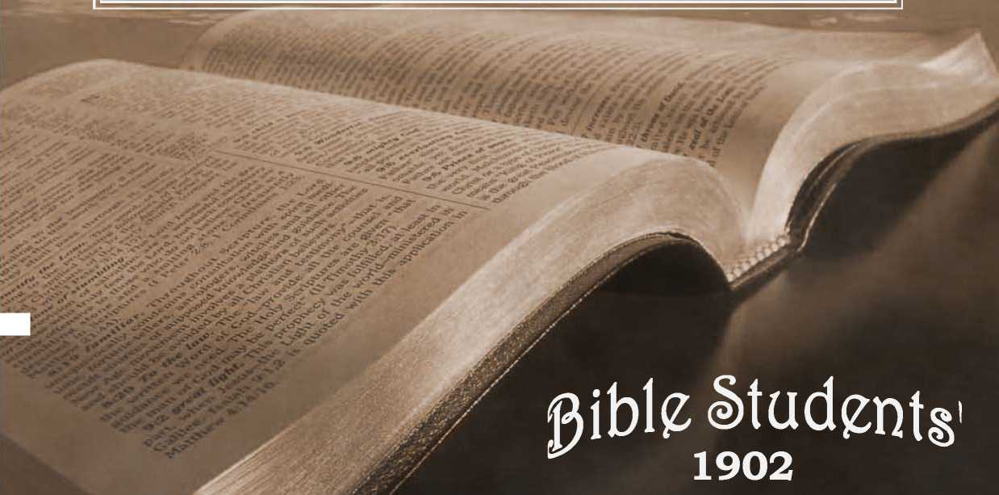

No. 57—The Scripture Teaching on Calamities and Why God Permits Them
• ■ ' : . Y - / . •
. . . ON . . . ! f
- s
. 4 . AND'. 4 s
Q°^ ^sriAits ^/tsTn
ss inquire for the old paths.'’’—J'-r, 6:16
BIBLE STUDENTS’ TRACTS
No. 57. April, 1902.
ENTERED AS SECOND CLASS MAIL MATTER AT THE POSTOFFICE, ALLEGHENY, PA.
SAMPLE TRACTS FREE! SUBSCRIPTION PRICE, SIX CENTS (3d.) PER YEAR—48 PAGES
— FOR THE —
PROMOTION OF CHRISTIAN KNOWLEDGE.
PUBLISHED BY THE
BRITISH BRANCH, IJI GREEN ST., FOREST GATE, LONDON,
NO. J. PROTESTANTS, AWAKE !
NO. 7. THE WONDERFUL STORY, J2 pp.
NO. 12. WHY EVIL WAS PERMITTED.
NO. 21. DO YOU KNOW?
NO. 37. HOW READEST THOU ?
NO. 38. HOPE OF IMMORTALITY.'
NO. 40. WHAT IS THE SOUL ? ,
NO. 41. MUST WE ABANDON HOPE OF A GOLDEN AGE?
NO. 4®. CROSSES TRUE AND FALSE.
NO. 44. GATHERING THE LORD’S JEWELS.
NO. 49. WHICH IS THS TRUE GOSPEL ?
NO. 52. OUR LORD’S RETURN.
N’O. 53. THE WAGES OF SIN.
NO. 54. A DARK CLOUD AND ITS SILVER LINING.
NO. 5>. CALAMITIES—WHY GOD PERMITS THEM.
Nos. 21, 40 and 53 can be had in Swedish.
Nos. 21, 27 and 53 can be had in Dano-Norwegian.
Nos. 3, 12, 21, 22, 28, 38, 40, 49 and 53 can be had in German,
Nos. 2i and 22 can be had in French.
Extra copies of the above tracts will be supplied free, on application to’ subscribers; or a single sample to any one Thus many may be coworkers with us and with Godin scattering the truth—“the hail.”—Isa, 28:17 Hundreds of thousands are being circulated thus, the funds being supplied by voluntary contributions from those whose hearts and heads have been refreshed by these “glad tidings of great joy which shall be unto all people.”
BOOKLETS
THe Wonderful story, “the old, old story.” Illustrated.—60 pp.
. what say the scriptures about hell?—88 pages. Also in German.
what say the scriptures about spiritism?—128 pages. Also in German.
TABERNACLE SHADOWS OF BETTER SACRIFICES. Ill. —130 pp. Also in German.
Extra Copies of the above booklets are supplied to subscribers at Ioc (id.) each, or 50c (^/6)per dozen: those below at gc (2|d.) each, 25c (z/j) per dozen,
the bIBLe vs. the Evolution theory. 48 pp. Also in German.
the PArousia of our lord. 78 pp. Also in Swedish.
epistle to the hebrrws. Illustrated.—64 pp. In Yiddish, only,
Ctarman WftUh Tower & Old Theology Quarterly-Translations.
— QUARTERLY FOR ONE TEAK, 25 CENTS. —
S«S supply Copies of ths first 19 issues at the fate of 19 copies for «5 seats.
Sample for free sirsnlatfen, gratis, postpaid, ”
"EXCEPT YE REPENT, YE SHALL ALL LIKEWISE PERISH?’
“ There were present at that season some who told him of the Gali--fans, whose blood Pilate had mingled liiith their sacrifices. And Jesus answering said unto them Suppose ye that these Galilaans were sinners above all the Galilatins, because they suffered such things? I tell you, Nay ; but except ye repent, ye shall all likewise perish.
“ Or, those eighteen, upon whom the toiler of Silo am fell, and slevJ them, think ye that they id ere sinners above dll meii that dwelt in Jerti. salem? I tell you, Nay; but, except ye repent, ye shall till likewise per: ish.'''—Luke 13:1-5.
ROBLE and good in the sight of both God arid man are the generous impulses of charity and sympathy, awakened by great calamities in recent years. And when' this is said, it leaves little more of good to be Said favorable to calamities or their influence.
While these charities should not be miscontrued to signify that God’s consecrated saints are rapidly multiplying—for many of the charitable are not the consecrated, and some are even ififldels,—yet they are an evidence that at least some of the original God-likeness of our race remains; that it has not been wholly obliterated by the degradation of the fall, nor wholly poisoned by the bad theology of the dark ages, While we live in a period, perhaps, as Selfish and money-loving aS ariy knowri to history, yet millions of dollars are generously poured forth to aid suffering humanity, And yet many who in times of Calamitous distress show that they have a tender spot somewhere iti their hearts, would afld do at other times lend time and brain and skill to the arts of war, and in designing the most horrible implements of warfare; and on occasions when1 bitter passi J are aroused would relentlessly arid pitilessly slaughter a thousand times as many as meet death by the acck dems of nature, Yet, for all this showing of the two
U)
ments in the same men, we rejoice that the God-like element of sympathy exists, as a partial offset to the devilish qualities of selfishness and heartlessness, which, under the degrading influence of man’s fallen state, have grown strong during the past six thousand years.
Preparatory to looking carefully, reasonably and Scriptur-ally at the question, Why does God permit calamities? let us note some of the absurd views of some Christian people, who should know God’s Word and character much better than they seem to know them. Some, whose hearts in the presence ot great calamities overflow with sympathy and God-like love (which proves their hearts better and more sound than their theology), declare that God is the director and cause of all disasters and troubles. Hence, whatever men may do to alleviate such distresses would, according to this false view, be so much done in opposition to God; and whatever love and sympathy they feel, is. so much sentiment opposed to God’s sentiments,—which are’thus made to appeaf-malitious.
But it seems ,a Vqry- slight thing to charge the Almighty with causing earth’s:Calamity&,-‘r4n comparison1 with the general thought of Christendom,’'that God has ^.premeditated, planned^'frorp befdre. the fetihdatioh of ■■'the world; their everlasting torturethe; difest. ■calamity. imdgindbleC A ..tornado, an earthquake, an epidemic of disease, Would be mercies and kindnesses in comparison to such diabolical schemes and preparations as are accredited to the Lord By the vast majority of his children,’Who’suffer still from thb superstition, ignorance and blindness of the “daft"k i^ges/^'and'' fts creeds. Alas, thht such false conceptions of the justice! and. lovp of out Creator should ever have gained ,a foothold in dur -minds—to. distort our every conception of every right and’ gpod’quality: O Lord, grant thy people a great opening of the eyes of their understanding, that we may be able to comprehend with all saints,— the lengths and the breadths, the heights and the depths of thy love and mercy toward thy creatures—through Christ Jesus our Lord!1 The difficulty is that men have been led to consider the very Bible which declares God’s true character of love and justice as authority for these devilish doctrines; and these false interpretations were originated in the “dark ages” by those who instigated or assisted in burning, and otherwise tormenting, real Bible believers.
GOD’S SYMPATHY—HOW SHOWN.
When we declare that whatever there is of love and sympathy in man is only the remnant of the original divine likeness. ill which Adam was created, not wholly effaced by six thousand lyears, of degradation in sin, it at once raises ,the question : Th what way does-God'manifest his sympathy/and love in such, emergencies, wheh evdri the hearts of fallen'huinan beings are touched,'with sympathy' and love,— to' acts of kindness and succor?
A correct answer is. that God is represented in every act of kindness done, whether by his children or by the world; because their actions under such circumstances are the result of their possession of some measure of his character and disposition. This answer is not full enough to be satisfactory; but, thank God, a fuller investigation, in the light of his Word, reveals a boundless sympathy on his part,—providing an abundant succor, which is shortly to be revealed.
But why does not God immediately succor his creatures from calamities? Or, tp go still further back, why does he, who has all wisdom to khow and all power to prevent, permit calamities,—cyclones, earthquakes, tidal-waves^ destructive floods, pestilences, etc. ? And while we are about it, we may as well include all the evils which God could- prevent, if he would—all the forms of sickness and pain and death; every manner of destruction—wars, murders, etc.; every thing which causes pain or trouble to those willing to and to be in harmony with Gqd.? .iThq answer (to .o,ne..of . th§se..que^tiij?ns. will be the answer to,,every, question .on the. subject; for all human evils are related and .havfe a common .source or cause.
To comp$ehen£ this cau.se fully, we must go far back, to the very beginning of sickness, pain.-/ death and sorrow.—to the Garden, of, J^detj, Where neither'famine, pestilence, /cyclone, earthquake-,:.n.Q.r, ,de^t|i ‘in any form was .permitted^, ,wh§,te man and his surroundings and conditions were pronounced “very good,” even by God himself, and must certainly have been greatly appreciated by man, who had to be driven out and prevented from returning by the fiery sword which kept the way of access to the life-sustaining fruits of the trees of the garden. W y j d * .• J' _
And this'’Cfeaton, who so graciously prdWjed for the life and comfort of his creatures, and who coffimur^d with them and gave them his blessing and the promise of everlasting 1;<~ upon the sole condition of. continued obedience,—how cant, it that he should so change in his attitude toward his cre& tures as to drive thepi from’the-enjoyments of: those Eden comforts‘and blessings, out into -'thehunprepared earth-p-to toT and wehrindss; and insufficient'sustenance, and thus to death?
We must rdmember that the Creator specially or miraculously “prepared” in advance the Garden of Eden, only, for man’s comfortable enjoyment of the favors of life, and a fitting 'place for his trial. God foresaw the fall of his creature, and provided that the penalty of sin, “dying thou shaft die,” instead of being suddenly inflicted, as by a lightning stroke or other speedy method, should be served out gradually by conflict with the unfavorable conditions (of climate, sterility of soil, storms, miasma, thorns, weeds, etc.,) of the unprepared earth; the preparation of which would require seven thousand years more to entirely fit it for the habitation of perfect, obedient, human children of God.
MAN A CONVICT-.
Adam and Eve, therefore, went forth from Eden convicts, under sentence of death; self-convicted under the most just of all judges, their Creator and friend. The convicts esteemed it a mercy to be let die gradually rather than suddenly; while to the Creator and Judge this was expedient because of his plan for their future, in which such experience w’ith imperfect conditions would be of great value;—a plan for the increase of the race, and for its discipline and final redemption and restoration.
The death penalty, inflicted in this manner, God foresaw would, through experience, furnish man such a lesson on the exceeding sinfulness of sin and its baneful results as would never need to be repeated;—a lesson, therefore, which would profit all who learn it to all eternity; especially when Christ’s Millennial reign of righteousness shall manifest in contrast the fruits of righteousness. God also designed that the exercise of man’s mental faculties in coping with the disturbances and imperfections of his surroundings and in inventing reliefs, and the exercise of his moral faculties in combating his own weaknesses, and the calls upon his sympathy, should prove beneficial.
Had the sentence of God (in addition to a loss of Eden’s comforts and experience with sin and death ) condemned his creatures to an eternity of torment and anguish, as so many now believe and teach, who could defend such a sentence, or call the Judge just, or loving, or in any sense good? Surely no one of a sound mind!
But when it is seen that the Scriptures teach that death (extinction), and not life in torment, was the penalty pronounced and inflicted, all is reasonable. God has a right to demand perfect obedience from his perfect creature when placed under perfect conditions, as in Adam’s case. And the decree that none shall live everlastingly except the perfect, is both a wise and a just provision for the everlasting welfare of all God’s creatures.
'There is a depth of meaning in the Creator’s words, as he sent forth his fairly tried and justly condemned creatures, among the thorns and briars, to labor and pain, and sorrow, and disease, and to be subject to the casualties and calamities of nature’s unfinished work. He said:—“Cursed is the .ground for THY sake:” i. e., The earth in general is in its present imperfect condition for your profit and experience; even though you may not esteem it so, Adam would have sought to retain continual access to the garden fruits, to avoid, severe labor and to enable him to fully sustain his vital powers and live forever; but in loving consideration for man’s ultimate good, nd less than in justice-, and in respect for his own sentence of death, God prevented this and guarded the way back to the garden, in order that the death sentence should not fail of execution, in order -that sinners should not live forever and thus perpetuate sin.
The children of the condemned pair inherited thpir fall, imperfections and weaknesses, and also the penalties of these; for “who can bring a clean thing out of an unclean?” The whole race, therefore, as convict laborers, have not only been learning what sin and evil are, and their undesirable results, but by their labor and skill they are serving to prepare the earth and bring it as a whole to the full perfection designed for it, and illustrated in the condition of Eden—ready for a further purpose of God of which none but his children (and not all of them) are made aware through the Scriptures.
We can see, then, that labor and toil were prescribed for man’s good. They have kept him so employed that he could not plan and consummate evil to the same extent that he otherwise would have done. And as the earth becomes more fertile, approaching perfection, man’s vitality becomes less; so that now, with greater leisure to plot and scheme and grow wise in evil, the period of life in which to do so is shorter. What a mercy in disguise is present shortness of life, under present circumstances! Were some of our “shrewd business men” who accumulate millions of money, and grasp great power in a few short years, to live 930 years, as A'dam did. what might we expect but that one man, or at most a syndicate or trust, would own every foot of land, control every drop of water and every breath of air, and have the rest of the race for their dupes and slaves?
God’s action, then, in exposing his creatures to death, pain and various calamities, it must be seen was, first of all, one which related only to his present life on earth, and to no other; for of any continuance of life, in any other locality, God did not give him the slightest intimation. On the contrary, the words of the penalty were: “Dust thou art and unto dust
'shalt thou return,”—“dying thou shalt die.”—Gen. 3:19;,2:17, margin. , ' _ . . , ?
■ True, God gave promise that, somehow and at some time, a son of the woman should accomplish a deliverance. But it was then yague'and indefinite, merely a glimmer of hope, to show tfiem’thht though’God dealt severely with them, and on lines 'of law and Justice, yet he sympathized with them, and would, ultimately, without violating justice or ignoring his own righteous sentence of death, bring them succor.
' . COD JU£T, YET THE JUSTIFIER OF. SINNERS'.
Paul tells us that God adopted a method for? the Steco very of man from that original sentence of d&ath that came'upon all as the result of Adam’s fall, which would show the justice of his sentence and the unchangeableness of his decrees, and yet permit such as are sick of sin to use their experience wisely, and to return to harmony and obedience to their Creator and his just and reasonable laws and regulations.
This divine plan, by which God could remain just and unchangeable in his attitude toward sin and sinners, and yet release the well-disposed from the penalty of sin (death and disfavor), is stated by the Apo’stle in Rom. 3 :24-26. ;
In brief, this plan provided that another rifan who, by obedience to the law of God. should prove his worthiness of eternal life, might;’by the billing'sacrifice of theliffi to which he was thus proved worthy' redeem the forfeited life of Adam and of his posterity who lost life through him; for it is written, “In Adam all die,” and “By the offence of one sentence of condemnation came on all men.”—1 Cor. 15 :22; Rom. 5 :I2, 18.: ’
. THE REDEEMER. . •
Since the condemnation to death ovas thus upon all men, and since another man newly created and’ inexperienced as Adam was, though just as favorably situated, Would have been similarly liable to fall, God devised" tne marvelous plan of transferring his only begotten Son from the spiritual to the human nature, and thus provided a man fit for sacrifice—“the man Christ Jesus who gave himself a ransom for all;” “who. though he was rich [thougii he was possessed’ of glory and honor and riches of wisdom and power above both angels and men], nevertheless for our sakes became poor [humbling himself to a lower nature., even as a man, becoming obedient even unto death] that we through his poverty might be made rich.” —1 Tim. 2:5; 2 Cor. 8:9.
Thus the one first created, “the first-born of all creation” (Col. 1:15), “the beginning of the creation of God” (Rev. 3:14), the one who had known God’s character longer, more fully and more intimately than any other being, the ;one in fact who had been Jehovah’s Chiefland honored, intelligent and active agent:in the creation of angels as well as of men, the one by whdm all things were- made, and aside from whom not anything was made (John 1:3; Col. 1 :i6, 17)—this great being, Jehovah’s Prime Minister, and next to himself in dignity, the Almighty entrusted with the great work of redeeming and restoring, mankind.
To redeem them would cost the sacrifice of the Son’s own life as their ransom-price, with all that that implied of suffering and self-denial. To restore them (such of them as should prove worthy—whosoever 'wills) would require the exercise of divine power to open the prison-house of death, and to break the fitters of sin and prejudice: an,d superstition, and give to all the redeemed the fullest opportunity, to decide whether they love good or evil, righteousness or sin, truth'.or error,—to destroy all who .love and work iniquity, and to develop and perfect again all who love and choose life upon its only condition—righteousness. - ■
To know .the Father’s plan and his privilege of co-operation in its execution, was to appreciate it and joyfully engage therein. Willingly our Lord Jesus laid aside the glory of the higher nature which he had had with the Father from before the'creation of man. (John 17:5 ; 2 Cor. 8:9.) He was “made flesh? (John 1:14; Heb. 2:14), became a . man at Jhirty years of age, and then began the great work of sacrifice,; the sacrifice of himself, for the cancelation of the sin. of the first man. to recover Adam and his race by dying on their behalf, as their Redeemer.. By . giving to-Justice the price of their liberty from divine condemnation, he secured the legal right to cancel, the sentence of condemnation, to death against-1 them, and hence the right to resurrect or restore to life, and- to all the lost estate and blessings, “whomsoever he wills.” {(John 5:21.) And he wills to restore all who shall prove worthy. And to prove who are worthy of everlasting life will be the object of the Millennial rei£n.—r-i Tim. 2:4; 2 Pet.- 3-9. •
This’fact that our Lord’s‘'mission to earth at the first advent wasno undo for the race,’legally, the results of Adam's transgression, and to secure the right to resurrect them and restore them, is clearly stated by the Apostle.—See, Rom. 5:6-12, 16-19, 21; 1 Cor. 15:21-24. ' -
BY HIS KNOWLEDGE.
Though tempted in all points like as we (his “brethren”) are, he ignored his own will (Luke 22:42; John 4:34; 5:30) and all suggestions from others contrary to God’s plan (Matt 16:23; Luke 4:4, 8, 12), and obeyed God implicitly. And therein lay the secret of his success. Temptations did not overcome him, as they did -even the perfect man Adam, because of the fulness of his consecration to the divine will and plan; and this fulness of consecration and trust was the result of his intimate knowledge of the Father and his unbounded confidence in his wisdom, love and power. He had recollection of his previous existence as a spirit being with the Father.. (John 17:5; 3:12, 13.) Our Lord’s success, then, was the result of being rightly exercised by his knowledge of God; as it is written: “By his knowledge shall my righteous servant justify many, while bearing their iniquities.”—-Isa. 53:11.
The suggestive thoughts here are two: First, that even a perfect man failed in trial because of the lack of full appreciation of God’s greatness, goodness and resources. Secondly, the knowledge (as in Satan’s case) would be valueless, if unaccompanied by sincere love and consecration to God’s will. A lesson further, to Christ’s “brethren,” is, that knowledge and consecration are both essential to their following in the Master’s footsteps.
Among men he and his mission were riot really known; even his most ardent followers and admirers at first .supposed that his mission was merely to heal some of the sick Jews, and to advance their nation to the rulership of a dying world, and to. be a teacher of morals; they saw not at first that his mission was to lay the foundation of a world-wide -empire, which should include not only the living, but also the dead, of Adam’s race, and which should insure everlastingly peace and joy to all the worthy, by eradicating, forever, sin and all who love it after fully comprehending its character in contrast with righteousness. Even his friends and disciples were slow to realize these grand dimensions of his work, though he continually repeated them, and bore witness, saying: “The Son of Man came to give his life a ransom for many;” “Verily, verily, the hour is coming* when the dead shall hear the voice of the Son of God, and they that hear [heed] shall live.” “The Lord hath sent me to preach deliverance to the captives [of death] and recovering of sight to the [mentally, morally and physically] blind; to set at liberty them that are bruised” —injured by the Adamic fall.—Matt. 20:28; John 5:25; Luke 4:18.
The sacrifice of the Redeemer’s all, as man’s ransom price, was offered at the time he was thirty years old—at his baptism. And there the offering was accepted by Jehovah, as marked by *Sinaitic MS. omits the words “and now is.” $
his anointing with the spirit. Thenceforth, he spent the three and a half years of his ministry in using up the consecrated life already offered; and this he completed at Calvary. There the price of our liberty was paid in full “It is finished 1” It holds good; it is acceptable by the grace of God, as the offset and covering for every weakness and sin of the first man, and his posterity, resulting either directly, or indirectly, from the first disobedience and its fall. All that is necessary since, for a full return to divine favor and communion, and to an inheritance in the Paradise of God, which the great Redeemer in due time has promised to establish in the entire earth, as at first in the Garden of Eden, is, a recognition of sin, full repentance, and a turning from sin to righteousness. Christ will establish righteousness in the earth by the Kingdom of God, which he has promised shall be established, and for which he has bidden us wait and hope, and for which he taught us to pray, “Thy Kingdom come, Thy will be done on earth even as it is done in heaven.”
“YE SHALE ALL LIKEWISE PERISH”
UNLESS YE REPENT.
Death, in whatever form it may come, is perishing, ceasing to exist. All mankind, through Adam’s transgression, came under condemnation to loss of life, to “perish,” “to be as though they had not been.” And only one way of escape from that condemnation has been provided. (Acts 4:12.) Because of Christ's redemptive work all may escape perishing by accepting the conditions of life. During Christ’s Millennial reign those whom Pilate slew, and those upon whom the tower of Siloam fell, and all others of the race, sharers in the death penalty now upon all, will be released from the tomb, brought to a knowledge of Christ, his ransom work, and their privilege of repentance and full restitution to divine favor,—life, etc. Thus seen, the Adamic death penalty was—to perish; but it has been canceled by Christ’s Ransom, so far as it relates to those who, when brought to know the Redeemer, shall forsake sin. No longer should it be regarded as a perished condition, but as a “sleep” (John 11:11-14; Matt. 9:24; 1 Thes. 4:14; 5:10), from which the Redeemer will awaken all, to give each who ’ did not have it before being overtaken by Adamic death, a full, individual opportunity to escape perishing and live forever. Yet, finally, all who shall fail to repent and lay hold upon the gracious Life-giver shall perish; they will fail to obtain the full restitution provided; they shall never see [perfect] life [full
restitution] for the wrath or condemnation of God will abide on them, condemning, them jto* death as; unworthy of li^e. As this will be their second condemnation, and a'n individual one, so the penalty will be the Second Death which will n'ot be general to; th^rape, but only upon such individuals ,^as? refuse God’s favor gf reconciliation and life. . '
Under-that filess'ed’and wise rule of Christ a’s King of nations,* ;fall the-evil,‘•depraved tendencies inherited from the fall and from-the six? thousand years of degradation, will be restrained, '.held in check, by superhuman wisdom, love and power; and? all being brought to a clear knowledge of the truth in its every phase, all will be fairly and fully tested. The lovers of righteousness, will fee perfected anj given control of the perfectedhearth, while 'those Joviag .unrighteousness under that clear light,, of ...knowledge and expedience* will, as followers of Satan’s example, be utterly destroyed in the Second Death. The first death is the destruction to which all were subjected by Adam’s sin, but from which all were redeemed by the Lord Jesus’sacrifice; and the Second Death is that destruction which will overtake those who, though redeemed by Christ from the first death, shall, by their own wilful conduct, merit and receive death again. This Second Death means utter destruction ,without hope of another redemption or resurrection; for Christ dieth no more. Nor could any good reason for their further trial be assigned; for the trial granted during the Millennial age under Christ, as Judge, will be a thorough and fair and individual and final trial.-—I Cor. 15:25. ' ' j, f
As our’ 'L6rd Jesus.; used the calamities of his .time as illustrating the jW penalty against all who do not Bee sin and lay hold upon tne Redeemer and Lite-giver, so we usfe them. We declare tiiat destruction, perishing, is the just penalty of sin taughtsin the Scriptures. We denounce as unsgriptyral the eternal . torrriqnt theory, so generally believeA by- God’s children,’ as One h)f Satan’s blasphemous slanders against God’s character^ And we proclaim that P'nly by faith in the Redeemer,'-repentance and reformation, can She gift of God, eternal life through Jesus Christ our Lord, be obtained. Whoever heirs’the offer ofJife lis responsible to^the extent that he understands it p'and'according? to (pod’s promise and plan all mankind shatl, at shme tiine,? either'duringythe Gospel age, or during the fr onting Millennial age, he brought to a full, clear appreciation of'these conditions arid opportunities, with fullest opportunities for repentance and life.
*Not “visible in flesh, however, for he is no longer flesh, having been highly exalted again after he had finished the flesh-life by giving it as our ransom price,—See, “The Time is at HandChap. V,
Calamities, then, are to be regarded, generally, as accidents, attributable tq huma,n imperfection and lack of experience, or to disturbances incidental to the preparation of the earth for its more quiet and .perfect condition during the gabbafhCor Seventh Thousand years (the Millennium), andfor its (state,' of absolute perfection forever after the Millennit|m,^during which, under Christ’s direction^ it shall be given its Ifinishir^ touches and be made fully ready for the redeemed race, which his reiarn shall prepare also to, rightly use gild enjoy and rule the perfected earth. ;And man is exposed to these calamities and accidents, arjd not defended from; them by. his Almighty^ Creator, because, first, ipan is as sinner condemned to, death anyway, and is hot to be spared from it, but must .be allowed to pass through it; and secondly, by the present ejxperietic.es with trouble and sorrow and pain, all of which are but elements of death, mankind is learning a lesson and layirfg up . in store. an experience with sin and its awful concomitants, sorrow, pain and death, which will be valuable in that Millennial age, when each shall be required to choose between good and evil. The evil they now learn first, the good and its blessed results and rewards, but dimly seen now, will be fully displayed then,— during the Millennium. ■ . , , ,
SPECIAL PROVIDENCES EOR THE SAINTS.’ ■ ’ ’
But some one inquires, If this be. Cod's plan7 for (redeeming the world by the death of his Son, and (justifying and (restoring all who believe in and accept of him, and obey and; love righteousness, -why did not the Millennial reign of Christ, with its favorable conditions and powerful restraints,begin at once, as soon as Christ had given the ransom pricetat Calvary; instead of cbmpelling those who would follow righteousness to sail through bloody seas and suffer for righteousness’ sake? Or else, why not have postponed the giving of the ransom until the close of the six thousand years of evil and the inauguration of the Millennial reign? Or,, at least, if the present order of events is best in the divine wisdom., why does not God specially protect from calamities, accidents, sorrow, pain, death, e-tc., those who have fully accepted of Christ and who have sacrificed and are using their all in the service of righteousness?
Ah, yes! The subject would be incomplete were this pointleft untouched. The consecrated saints, the Church of the Gospel age, are a “peculiar people,” different from the rest of the redeemed race; and God’s dealings with them are peculiar and different also. Calamities, great and small, continually involve God’s saints as well as the worldly, and seemingly as much by accident, But herein the Lord provides a test for our faith;—intended either to turn us back, if we have not sufficient faith to permit further progress, or to develop and strengthen and increase our faith if we have it, and will exercise it under divine direction.
The Lord’s assurance to his truly consecrated spirit-begotten children is, that all things shall work together for good to them. (Rom. 8:28.) God assures them that having entered into a new relationship with him, all of their affairs are henceforth his affairs and concern. Consequently, they may realize, fully, that however the world may be subject to acci~ dents, incidental to present imperfect conditions under the curse, God’s “little ones” are his peculiar care. Not a hair of their heads may suffer injury without his knowledge and consent. (Matt. 10:30; Luke 12:7.) How wonderful! And yet how reasonable when we recall the assurance that, “Like as a father [earthly] pitieth his children, so the Lord pitieth them that reverence him/’—Psalm 103:13;
tVHY SHOULD NOT God’s FAITHFUL BL ENTIRELY EXEMPT FROM SUFFERING AND DEATH, AND
ALL THE EVIL RESULTS OF SIN AND ITS PENALTY ?
Surely’. That is the query that naturally arises and that is answerable only from one standpoint: and its answer can be appreciated only by the saints;—and by them in proportion to their faith, and their knowledge of God and his Word. The answer is twofold; that is to say, there are two reasons why God’s people are not exempted from the ills of life common! to the world.
(1) Such exemption would attract all kinds of characters into the Church, for selfish motives. And, altho God purposes offering his blessings freely to all in due time, he is working’ according to a plan, in which the present age is intended for the selection of a special class, for a special purpose—to be! used as divine agents, as joint-heirs with the Lord and Savior in blessing and enlightening the whole world in the coming age. Contrary to the general understanding, therefore, God is as careful to exclude some from his Church as to draw others. His preferences are not according to color or sex Or- learning or nationality, however, but according to faith and obedience’ and Chrlst-likeneSs of heart, or will* “Whom he did foreknow he also did predestinate [all who shall be accepted as inembers of the glorified Church, the Royal Priesthood] to be conformed to the Image [character-likeness] of bis Soft.”—■ Rom. 8:29, . . <
(2) It Is a part of the riecegsarv schooling of the dhurcfa, that they shall learn to trust the Lord implicitlynot merely hi matters which they can see clearly and understand fully, but in everything. Those who cannot learn this as one of their lessons (and it is one of the most important of all) cannot pass the examination; but will be deemed “unfit for the Kingdom,"’ whatever else they may be fitted for. True, faith is not the only qualification for a share in the Kingdom; but it is the most important of all, because without it we cannot so well cultivate the other elements of character; and because without faith the other elements of character would not be acceptable to God, even if we had them in perfection.
Only from the instructions of God’s Word can we see matters from this standpoint; and only when viewed from this standpoint can the trials, difficulties, perplexities, persecutions, etc,, which come to God’s people, be appreciated so that they can “rejoice in tribulation and in everything give thanks.” They rejoice by faith, even as they see by faith, and walk by faith. Such only can realize that present trials are designed bv the Lord, and intended to work out for those properly exercised thereby a far more exceeding and eternal weight of glory;—for they look not at the things that are seen and temporal; but, with the eye of faith, at the things promised— unseen and eternal.—2 Cor. 4:18.
While we trust that this and others of our publications /nay be helpful to many—enlightening and encouraging, it is not improper for us to say that their special mission is not to the worldly and the satisfied; but to the meek and humble' who hunger and thirst—for righteousness, for God, for his truth, desiring to know and to love and to serve him,—and to the saints,—those who already know the Lord to a considerable extent, for now, in this time of growing skepticism, along lines of “higher criticism” and “evolution,” such need the “meat in due season” which the Lord has prepared for them, realizing their needs long in advance. We specially inform all such that our Society is devoted to the Lord and his Word and his people. We publish a twice-a-month journal (16 pages), and various Bible-study helps—not for gain, not for profit, but for the edification of the Lord’s people and their upbuilding in the knowledge of the Lord, and as assistances to the Bride class in making ready for union with the bridegroom—that each may make his calling and his election Sure, We urge you to join with us in the study of th'e Father’s Word, in the light now shining upon it;—whether ydit can contribute toward the expense of the publications or hoL The majority of God’s saints are as poor in this world’s goods as they are rich hi faith, _We gladly offer all such hungry ones any and all of our publications fre<y Write to us fully at once, "Come with us, and we will do you good; for the L'Srd hath spoken good Israel.” (XdVmt /ww,)
DAWH ----- THIS IS-----
THB GENERAL TITLE OF A SERIES OF BOOKS BY THE EDITOR OF ZION’S WATCH TOWER
Vol. I., The Plan of the Ages, gives an outline of the divine plan revealed in the Bible, relating to man’s:redemption and restitution: 358 pages, paper bound 25c. (i§.), postpaid; in embossed cloth 35c. (is.6d.), plus postage; ioc. (4d.). ’ t ■■ ' V : '' ■. “ ; " •
Vol. i^., The Time.is a,t Ilanf fteete of the manner and time of the Lord’s second coming, considering the Bible testimony on “this Subject: 37° Pages» paper bound 25c. (is.), postpaid; in embossed cloth 35c. (is.6d.), postage ioc. (4d.). : '
Vol. HL, Thy Kingdom Gome, considers prophecies which mark events connected with the 4‘Time of the End,” the glorification of the Church and thd establishment jof the Millennial Kingdom; ’ it also contains a chapter on the Great Pyramid, showing its corroboration of the dates and: other Teachings of the Bible: 384 pages) paper bound 25c. (is.), postpaid; in embossed cloth 35c. (is.6d.), plus postage ioc. (4d.).
Vol. iv’, Th‘e Day .of Vengeance, .shows that the dissolution of the present order of things, is in progress, and that all the panaceas offered are valueless to hvert the predicted end. It marks in these events the fulfilment of prophecy, noting specially our Lord’s great .prophecy of Matt. 24, and Zech. 14:1-9: 660 pp., paper 25c, postpaid; in efnbossed cloth 35c.(is.6d.), plus postage ioc. (4d.). .
Vol. v., The At-on’e-ment Between God and Man, treats an allimportant subject,—the hub, the center around which, ail the features of divine grace revolve. Its topic deserves the most careful and prayerful consideration dn the part of all true Christians: 507 pages, paper bound 25c. (is.) postpaid; in embossed cloth 35c. (is.6d.), postage ioc. (4d.)_
Tn Full Leather Binding, gilt edges, the set (.5 vols.) $5.00 (Z"i )> plus postage 5 pc. (ipd.). .
Millennial Dawn is published in foreign languages as follo-vs : in German, four vols.; in Swedish, three vols.; in Dang-Norwegian, two vols.; in French, one vol.; bound in cloth and paper, uniform with the English edition, prices the same.
WHOLESALE RATES TO WATCH TOWER SUBSCRIBERS
IN cloth, 25c. (is.id.) per vol.; in leather, $3.00 (ns.) per set—delivered.
in paper, l2jZc. (6d.) per copy, by express or freight at your charges; ten or more copies in one package, ioc. (3d.) per copy. If by mail, add 8c. per copy for postage. (In Great Britain, add 3d. for one copy, and id. for each additional copy included in one parcel.)
TO OBTAIN THE WHOLESALE RATE, MENTION THAT YOU ARE A SUBSCRIBER.
WATCH TOWER BIBLE & TRACT SOCIETY
“bible HOUSE,” ALLEGHENY, PA.
BRITISH BRANCH: I3I GREEN ST., FOREST GATE, LONDON,
Helps for Bible Study supplied at low prices; and tracls and our twice-a-month journal given gratis, or books loaned gladly, to the poor in spirit who are poor in purse, 4 •> ■> '
See (i What Say the Scriptures About ITell?" Sample copy free on application, go cents per dozen.